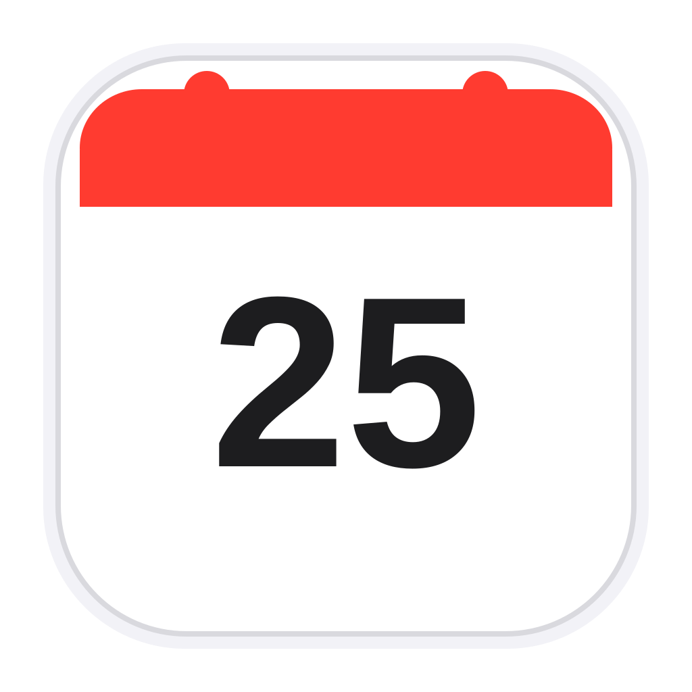

일
월
화
수
목
금
토

캘린더앱을 다시 시작하면 새 버전이 적용돼요. 메모와 설정은 그대로 남아 있어요.
메모에 제목·목록·체크박스를 넣는 방법은 탭에서 볼 수 있어요.
줄 맨 앞에 아래처럼 입력하고 스페이스를 누르면 바로 서식이 적용됩니다.
# | 제목 1 | ## | 제목 2 |
- | 글머리 목록 | 1. | 번호 목록 |
[] | 할 일 체크박스 | [x] | 완료된 할 일 |
> | 인용 | --- + Enter | 구분선 |
글자 서식은 기호로 감싸면 적용됩니다.
**굵게** | 굵게 | *기울임* | 기울임 |
~~취소선~~ | `코드` | 코드 |
단축키
| Ctrl+B / I / U | 굵게 / 기울임 / 밑줄 |
| Ctrl+Shift+X | 취소선 |
| Ctrl+Shift+C | 할 일 체크박스 켜기/끄기 |
| Enter (빈 할 일·목록에서) | 목록 끝내기 |
| Ctrl+Enter / Esc | 저장 / 닫기 |